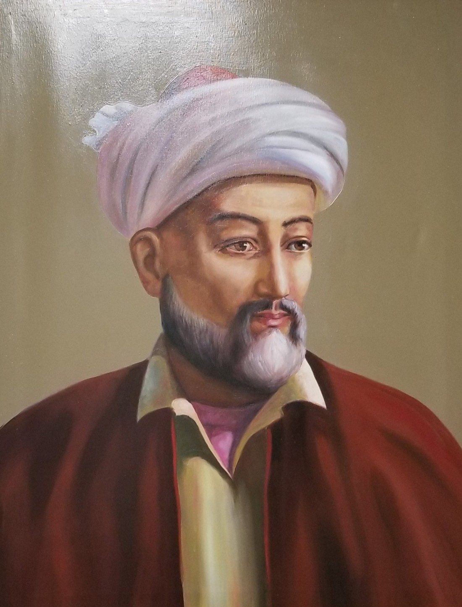
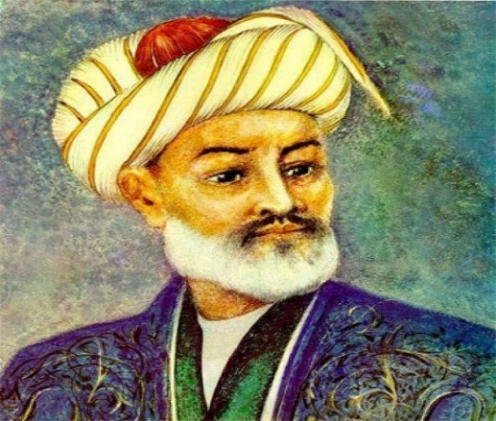
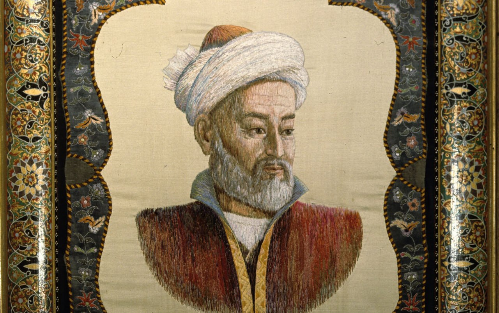

Алишер Навои
Родился 1441 года в городе Герат
Алишер Навои
Алишер Навои — поэт, философ, общественный, государственный деятель писал на двух языках – тюркском и фарси (персидском). Его называют родоначальником литературы народов Центральной Азии. Особое отношение к Алишеру Навои сложилось в Узбекистане, где его считают отцом-основателем литературного языка. Навои был выдающимся поэтом, мыслителем, общественным, государственным деятелем. Высокообразованный поэт творил на двух языках – тюркском и персидском. Он жил в XVI веке, но его афоризмы, произведения до сих пор не утратили своей актуальности. ДЕТСТВО И ЮНОСТЬ Этого человека многие народы Центральной Азии считают своим земляком, относятся к нему с глубоким уважением. Мудрецы и поэты всегда пользовались большим расположением у простого народа. Алишер Навои не стал исключением. В истории сохранились точные сведения об имени и происхождении великого поэта. Его полное имя – Низомиддин Мир Алишер. Мальчик родился под созвездием Водолея в феврале 1441 года в Герате. В тот период именно Герат считался столицей провинции Хорасан. Последняя входила в состав Мавераннахра, государства, основателем которого стал Амир Тимур. Алишер Навои Происхождение поэта до сих пор не дает покоя его соотечественникам, другим заинтересованным ученым. Некоторые считают Алишера потомком уйгурских сказителей (бакши). Есть иная версия – многие ученые полагают, что предками Навои были представители монгольского племени барласов, к которому принадлежал и сам Тимур.

